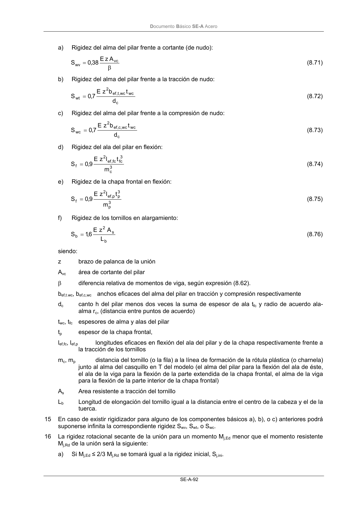

DB-SE-A · Página 94 · versión 2007-10-23
SHA256: 9ed9ea694aabfbda3bfbbef40dfe9223fde05d13c35bc2ba9751e5a96a22a64f · página física 94 de 168 · métodos de encabezado
solo si están cotejados.
Formatos: Markdown · JSON de bloques · PDF p. 94 · imagen PNG
Documento Básico SE-A Acero SE-A-92 a) Rigidez del alma del pilar frente a cortante (de nudo): β = vc wv A z E 38 ,0 S (8.71) b) Rigidez del alma del pilar frente a la tracción de nudo: c wc wc ,t, ef 2 wt d t b z E 7,0 S = (8.72) c) Rigidez del alma del pilar frente a la compresión de nudo: c wc wc ,c, ef 2 wc d t b z E 7,0 S = (8.73) d) Rigidez del ala del pilar en flexión: 3 c 3 fc fc , ef 2 f m t l z E 9,0 S = (8.74) e) Rigidez de la chapa frontal en flexión: 3 p 3 p p, ef 2 f m t l z E 9,0 S = (8.75) f) Rigidez de los tornillos en alargamiento: b s 2 b L A z E 6,1 S = (8.76) siendo: z brazo de palanca de la unión Avc área de cortante del pilar β diferencia relativa de momentos de viga, según expresión (8.62). bef,t.wc, bef,c,wc anchos eficaces del alma del pilar en tracción y compresión respectivamente dc canto h del pilar menos dos veces la suma de espesor de ala tfc y radio de acuerdo ala- alma rc, (distancia entre puntos de acuerdo) twc, tfc espesores de alma y alas del pilar tp espesor de la chapa frontal, lef,fc, lef,p longitudes eficaces en flexión del ala del pilar y de la chapa respectivamente frente a la tracción de los tornillos mc, mp distancia del tornillo (o la fila) a la línea de formación de la rótula plástica (o charnela) junto al alma del casquillo en T del modelo (el alma del pilar para la flexión del ala de éste, el ala de la viga para la flexión de la parte extendida de la chapa frontal, el alma de la viga para la flexión de la parte interior de la chapa frontal) As Area resistente a tracción del tornillo Lb Longitud de elongación del tornillo igual a la distancia entre el centro de la cabeza y el de la tuerca. 15 En caso de existir rigidizador para alguno de los componentes básicos a), b), o c) anteriores podrá suponerse infinita la correspondiente rigidez Swv, Swt, o Swc. 16 La rigidez rotacional secante de la unión para un momento Mj,Ed menor que el momento resistente Mj,Rd de la unión será la siguiente: a) Si Mj,Ed ≤ 2/3 Mj,Rd se tomará igual a la rigidez inicial, Sj,ini.
